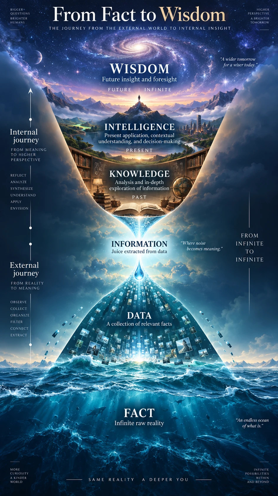

Real-world analogy
The hourglass, read from the bottom up
- Fact. An endless ocean of what is.
- Data. We observe and collect the relevant facts.
- Information. We extract the juice. Noise becomes meaning.
- Knowledge. We explore it in depth. This looks at the past.
- Intelligence. We apply it and choose. This acts in the present.
- Wisdom. Insight and foresight. This looks to the future.
The original hourglass

“From Fact to Wisdom”, created by CA Rathinagiri.
Same reality. A deeper you.